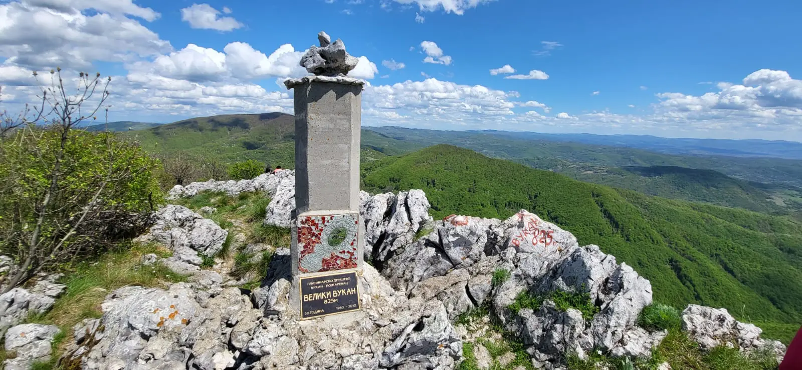

Homoljske planine - Mali i Veliki Vukan 06.04.2024.

Opis ture
Homoljske planine se nalaze u Istočnoj Srbiji i pripadaju grupi Karpatsko-balkanskih planina.
Sastoje se pretežno od škriljaca i krečnjaka. Prostiru se pravcem zapad-istok i smeštene su između Zviške kotline na severu i Žagubičke kotline na jugu,
kao i između Mlavske kotline na zapadu i izvorišnih delova Peka na istoku. Prosečna visina je oko 900 metara, a najviša tačka iznosi 962 metara.
Planine su bogate gustom šumom i mnogim rečnim izvorima, koji se spuštaju sa padina.
Tačke od interesa
Planinarski dom na Bukovu: Planinarski dom pruža udoban smeštaj i informacije o stazama u okolini.
Bukovski vrh: Ovo je jedan od najviših vrhova u Homoljskim planinama sa spektakularnim pogledom na okolinu. Možete se popeti do vrha i uživati u panoramskom pogledu.
Vodopad Veliki buk: Ovaj prelep vodopad nalazi se u blizini sela Ravni Topolovac. Idealno je mesto za osveženje i relaksaciju tokom planinarenja.
Manastir Manasija: Nakon napornog planinarenja, poseta Manastiru Manasija može biti umirujuća. Ovaj manastir, poznat i kao Resava, jedan je od najvažnijih manastira u Srbiji.
Spomenik kulture: Crkva u Vitkovcu: Ova crkva, smeštena u selu Vitkovac, predstavlja kulturno blago Homolja. Arhitektonski, crkva je izuzetno zanimljiva i vredna posete.
Gornjak: Ovaj planinski vrh nudi još jedan izvanredan pogled na okolinu. Idealno je mesto za planinarenje i uživanje u prirodi.